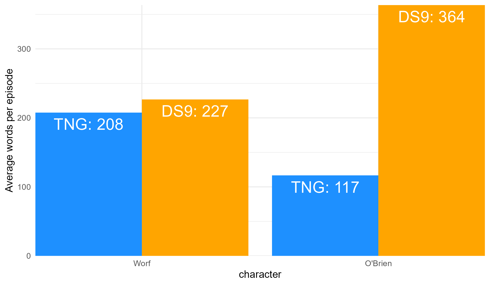

A curated data frame of metadata and text variables derived from episode and movie transcripts can be downloaded with st_transcripts. The format is one episode per row. There are metadata columns and list column of nested text variables.
library(dplyr)
library(tidyr)
library(ggplot2)
library(ggrepel)
(scriptData <- st_transcripts())
#> # A tibble: 726 x 10
#> format series season number title production airdate url url2 text
#> <chr> <chr> <int> <int> <chr> <int> <chr> <chr> <chr> <lis>
#> 1 episode TOS 1 0 The C~ 1 <NA> http~ http~ <tib~
#> 2 episode TOS 1 1 The M~ 6 1966-0~ http~ http~ <tib~
#> 3 episode TOS 1 2 Charl~ 8 1966-0~ http~ http~ <tib~
#> 4 episode TOS 1 3 Where~ 2 1966-0~ http~ http~ <tib~
#> 5 episode TOS 1 4 The N~ 7 1966-0~ http~ http~ <tib~
#> 6 episode TOS 1 5 The E~ 5 1966-1~ http~ http~ <tib~
#> 7 episode TOS 1 6 Mudd'~ 4 1966-1~ http~ http~ <tib~
#> 8 episode TOS 1 7 What ~ 10 1966-1~ http~ http~ <tib~
#> 9 episode TOS 1 8 Miri 12 1966-1~ http~ http~ <tib~
#> 10 episode TOS 1 9 Dagge~ 11 1966-1~ http~ http~ <tib~
#> # ... with 716 more rows
scriptData$text[[81]]
#> # A tibble: 816 x 6
#> line_number perspective setting description character line
#> <int> <chr> <chr> <chr> <chr> <chr>
#> 1 NA <NA> Fade in <NA> <NA> <NA>
#> 2 1 Ext. Space -~ The u.s.s. E~ <NA> Picard V~ Captain's~
#> 3 2 Other introd~ On the gigan~ <NA> Picard V~ My orders~
#> 4 3 Int. Engine ~ Huge, with a~ Continuing Picard V~ ... I am ~
#> 5 4 Closer on ve~ Showing the ~ <NA> Picard V~ I am stil~
#> 6 NA Int. Lounge ~ With its hug~ <NA> <NA> <NA>
#> 7 5 Continued <NA> Continuing Picard V~ ... my cr~
#> 8 6 Int. Bridge ~ "Picard, tro~ Continuing Picard V~ ... a fir~
#> 9 7 Angle emphas~ As picard tu~ <NA> Picard You will ~
#> 10 8 Angle emphas~ <NA> <NA> Data Difficult~
#> # ... with 806 more rowsConsider TNG episodes. A rough estimate of the relative amount of speaking parts can be obtained by counting up the lines for each character. A better measure would be an estimate of word count taken from each spoken line. Calculate these statistics by season and episode as well as character.
Also remove unneeded columns. As is common in text analysis, even a clean dataset may need further preparation for a specific task. In this case it is important to strip references to things such as voiceover (V.o.) from the character column.
pat <- "('s\\s|\\s\\(|\\sV\\.).*"
x <- filter(scriptData, format == "episode" & series == "TNG") %>%
unnest(text) %>%
select(season, title, character, line) %>%
mutate(character = gsub(pat, "", character)) %>%
group_by(season, title, character) %>%
summarize(lines = n(), words = length(unlist(strsplit(line, " "))))
x
#> # A tibble: 2,858 x 5
#> # Groups: season, title [176]
#> season title character lines words
#> <int> <chr> <chr> <int> <int>
#> 1 1 11001001 <NA> 30 30
#> 2 1 11001001 Ad Libbed Voices 1 14
#> 3 1 11001001 Bass 4 16
#> 4 1 11001001 Beverly 7 169
#> 5 1 11001001 Bynar One Zero 1 5
#> 6 1 11001001 Bynar Zero One 1 9
#> 7 1 11001001 Computer 11 96
#> 8 1 11001001 Computer Voice 14 129
#> 9 1 11001001 Data 31 361
#> 10 1 11001001 Drummer 2 22
#> # ... with 2,848 more rowsFocus on the top eight characters.
totals <- group_by(x, character) %>%
summarize(lines = sum(lines), words = sum(words)) %>%
arrange(desc(words)) %>% top_n(8)
totals
#> # A tibble: 8 x 3
#> character lines words
#> <chr> <int> <int>
#> 1 Picard 14126 163701
#> 2 Data 7012 88573
#> 3 Riker 8284 78207
#> 4 Geordi 5095 57868
#> 5 Beverly 3740 45114
#> 6 Troi 3615 39128
#> 7 Worf 4233 36345
#> 8 Wesley 1564 14164By the way, look at the total estimated lines and words spoken by each character. These are of course rough estimates. Nevertheless, it is interesting to see that Picard has nearly twice as much to say as the next most talkative character on the show, the Android, Data. It must be all those impromptu diplomatic speeches.
id <- totals$character
chr <- factor(totals$character, levels = id)
uniform_colors <- c("#a71313", "#c1c730", "#2b53a7")
ulev <- c("Command", "Operations", "Science")
uniform <- factor(ulev[c(1, 2, 1, 2, 3, 3, 2, 3)], levels = ulev)
totals <- mutate(totals, character = chr, uniform = uniform)
ggplot(totals, aes(character, words, fill = uniform)) +
geom_col(color = NA, show.legend = FALSE) +
scale_fill_manual(values = uniform_colors) +
geom_text(aes(label = paste0(round(words / 1000), "K")),
size = 10, color = "white", vjust = 1.5) +
scale_x_discrete(expand = c(0, 0)) +
scale_y_continuous(expand = c(0, 0)) +
theme_minimal(18)
What is each character’s biggest episode per season in terms of estimated spoken words?
biggest <- filter(x, character %in% id) %>%
mutate(character = factor(character, levels = id)) %>%
group_by(season, character) %>%
summarize(title = title[which.max(words)], words = max(words)) %>%
arrange(character)
biggest
#> # A tibble: 55 x 4
#> # Groups: season [7]
#> season character title words
#> <int> <fct> <chr> <int>
#> 1 1 Picard Encounter at Farpoint 2575
#> 2 2 Picard The Measure of a Man 1844
#> 3 3 Picard The Survivors 1738
#> 4 4 Picard Devil's Due 2095
#> 5 5 Picard Ensign Ro 1897
#> 6 6 Picard The Chase 2083
#> 7 7 Picard All Good Things... 4019
#> 8 1 Data Datalore 944
#> 9 2 Data The Schizoid Man 1592
#> 10 3 Data The Offspring 1886
#> # ... with 45 more rows
biggest <- mutate(biggest, winner = character[which.max(words)],
ymn = min(words), ymx = max(words)) %>% ungroup() %>%
mutate(uniform = factor(uniform[match(biggest$character, id)], levels = ulev))
ggplot(biggest, aes(season, words)) +
geom_linerange(aes(ymin = ymn, ymax = ymx)) +
geom_point(aes(fill = uniform), shape = 21, size = 2, show.legend = FALSE) +
scale_fill_manual(values = uniform_colors) +
geom_text_repel(aes(label = paste0(title, " (", character, ")")),
size = 2.3, hjust = -0.1, direction = "y", min.segment.length = 0.65) +
scale_x_continuous(breaks = 1:7, labels = 1:7, expand = expand_scale(0, c(0.1, 0.8))) +
theme_minimal(18) + theme(panel.grid.minor = element_blank())Finally, look at both Worf and O’Brien, making a comparison between TNG and DS9 in terms of their prominence.
x <- filter(scriptData, format == "episode" & series %in% c("TNG", "DS9")) %>%
unnest(text) %>%
select(series, season, title, character, line) %>%
mutate(character = gsub(pat, "", character)) %>%
filter(character %in% c("Worf", "O'brien")) %>%
group_by(series, title, character) %>%
summarize(lines = n(), words = length(unlist(strsplit(line, " "))))
avg <- group_by(x, series, character) %>%
summarize(lines = mean(lines), words = mean(words)) %>%
arrange(character, series) %>% ungroup()
avg$character <- gsub("O'brien", "O'Brien", avg$character)
avg
#> # A tibble: 4 x 4
#> series character lines words
#> <chr> <chr> <dbl> <dbl>
#> 1 DS9 O'Brien 34.5 364.
#> 2 TNG O'Brien 11.6 117.
#> 3 DS9 Worf 22.2 227.
#> 4 TNG Worf 24.2 208.
id <- rev(unique(avg$character))
chr <- factor(avg$character, levels = id)
avg <- mutate(avg, series = factor(series, levels = c("TNG", "DS9")), character = chr)
ggplot(avg, aes(character, words, fill = series)) +
geom_col(color = NA, show.legend = FALSE, position = position_dodge()) +
scale_fill_manual(values = c("dodgerblue", "orange")) +
geom_text(aes(label = paste0(series, ": ", round(words))),
size = 10, color = "white", vjust = 1.5,
position = position_dodge(width = 0.9)) +
labs(y = "Average words per episode") +
scale_x_discrete(expand = c(0, 0)) +
scale_y_continuous(expand = c(0, 0)) +
theme_minimal(18)
Starfleet promotions in rank aside, Worf did not even quite receive a 10% pay bump in terms of average spoken words per episode. On the other hand, O’Brien had an increase of 211%, or more than triple the average number of spoken words per episode when moving from the Enterprise to Deep Space Nine. All things considered, take the transfer. But on spoken words alone, O’Brien was clearly favored. The squeaky wheel gets the grease.